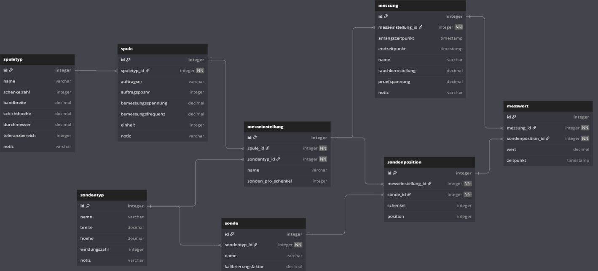

Trench Group Coil Visualization
HTL Leonding – 4CHIF – SYP-Projekt
ABOUT
ABOUT
What is this project?
This project is the SYP-Project of the 4CHIF class of the HTL Leonding.
It helps Trench Group visualize and validate core deviation in Arc Suppression Coils.
It checks whether deviations are within the allowed tolerance.
ABOUT
Project Team
- Filip Schauer — Frontend Lead
- Emil Silber — Backend Lead
- Aaron Schreiegg — Frontend
- Axel Csomany — Frontend
- Simon Pesut — Backend, Database, Deployment
USAGE
USAGE
Benutzerrollen
- Admin: Voller Zugriff inkl. Benutzerverwaltung
- Monteur: Zugriff auf Funktionen, aber keine Schreibrechte für Typen
USAGE
Entitäten
- Spulentyp
- Spule
- Sondentyp
- Sonde
- Sondenposition
- Messeinstellung
- Messung
- Messwert
USAGE
Spulentyp und Messsondentyp werden von Admin erstellt


USAGE
Spule und Sonde werden von Monteur erstellt
USAGE
Spule anhand von Spulentyp erstellen

USAGE
Sonde anhand von Messsondentyp erstellen

USAGE
Messeinstellung wird anhand von Spule und Messsondentyp erstellt
Messungen
Messung starten durch Auswahl der Messeinstellung
Echtzeit-Visualisierung, global zugänglich, Optionen: Pause, Speichern, Abbrechen.
USAGE
Messung starten
USAGE
Werte und Echtzeit-Visualisierung einsehen

CODE
CODE
Filestructure
docs/– Dokumentation (Asciidoctor + Reveal.js)frontend/– Angular Appbackend/– .NET Core + MQTT Simulation

CODE
REST API (Kurzfassung)
Auth: POST
Messeinstellung: CRUD
Sonde/Sondentyp: CRUD
Spule/Spulentyp: CRUD
Sondenposition: CRUD
Messung: CRUD
Messwert: CRUD
DIAGRAMS
DIAGRAMS
Architekturübersicht

DIAGRAMS
ERD-Diagram
DIAGRAMS
USE-CASE-Diagram